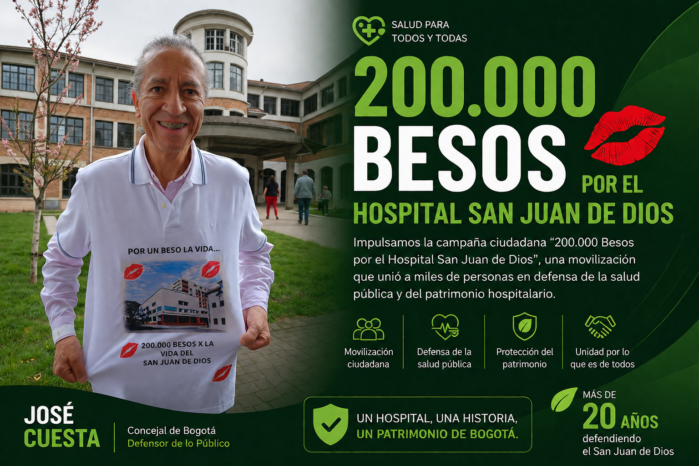
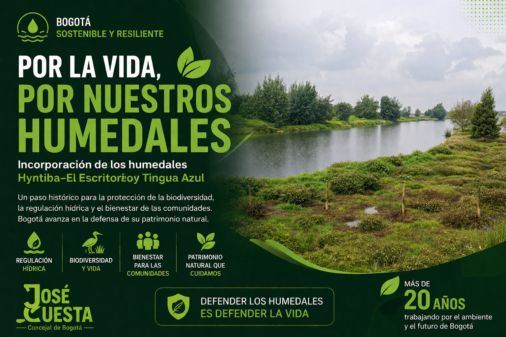
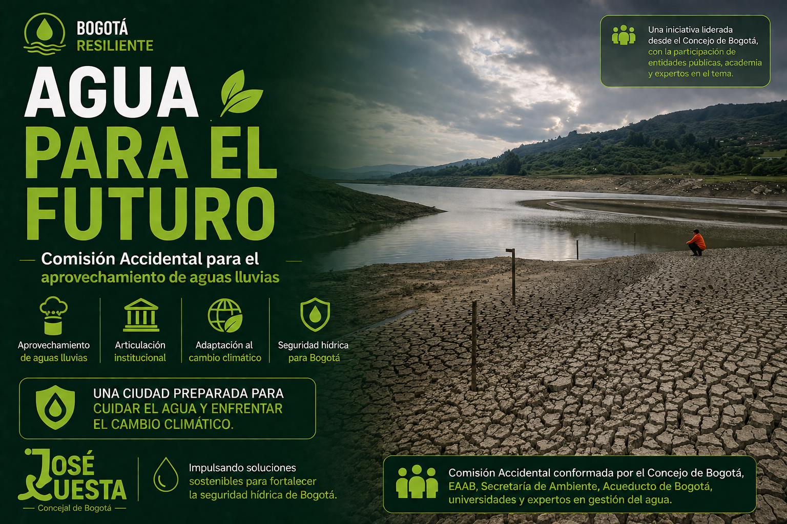

Trabajando por una Bogotá mejor
Impulsando iniciativas en salud pública, ambiente y participación ciudadana.
Ver propuestasImpacto y Resultados

200.000 Besos por el Hospital San Juan de Dios
Impulsó la campaña ciudadana "200.000 Besos por el Hospital San Juan de Dios", movilizando a miles de personas en defensa de la salud pública y del patrimonio hospitalario.
Un símbolo ciudadano por la recuperación del Hospital San Juan de Dios.

Bogotá Saludable
Autor del Proyecto de Acuerdo que fortalece la Atención Primaria en Salud, promoviendo la prevención, el trabajo comunitario y una atención más cercana.
Salud preventiva con enfoque territorial y comunitario.

Defensa de la Reserva Van der Hammen
Hemos promovido acciones de control político y defensa ambiental para proteger uno de los corredores ecológicos más importantes de Bogotá.
Protección del agua, la biodiversidad y la conectividad ecológica.

17 Humedales Protegidos para Bogotá
Impulsamos la protección oficial de los humedales Hyntiba-El Escritorio y Tingua Azul, fortaleciendo la red ecológica de la ciudad.
Bogotá pasó de 15 a 17 humedales oficialmente protegidos.

Seguridad Hídrica para Bogotá
Lideramos una comisión para impulsar el aprovechamiento de aguas lluvias y promover soluciones sostenibles frente a la crisis hídrica de Bogotá.
Aprovechar el agua lluvia hoy para garantizar el agua del mañana.